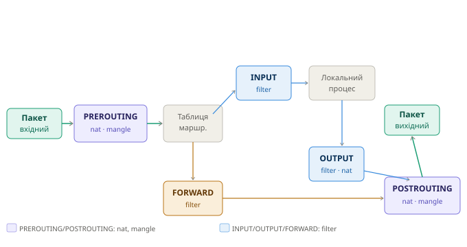
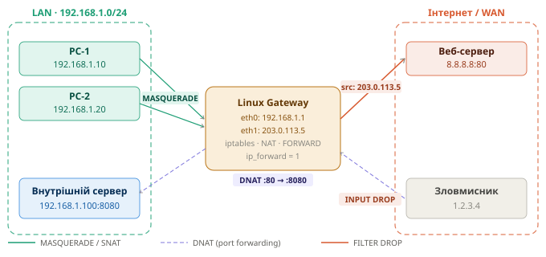

iptables — Шпаргалка
Курс: Безпека комп'ютерних мереж | 4 курс
1 Архітектура iptables
iptables - утиліта управління фільтрацією пакетів у Linux через підсистему Netfilter ядра. Кожен пакет проходить через ланцюжки правил (chains) в певному порядку залежно від напрямку руху
📁 Схема проходження пакетів:
assets/server-services_iptables_1.svg
1.1 Таблиці (Tables)
| Таблиця | Призначення | Ланцюжки |
|---|---|---|
| filter | Фільтрація пакетів (за замовчуванням) | INPUT, OUTPUT, FORWARD |
| nat | Трансляція адрес | PREROUTING, OUTPUT, POSTROUTING |
| mangle | Зміна заголовків пакетів (TOS, TTL) | Всі |
| raw | Обхід connection tracking | PREROUTING, OUTPUT |
1.2 Ланцюжки (Chains) та їх призначення
PREROUTING → пакет щойно прийшов на інтерфейс, ще до маршрутизації
(тут: DNAT, зміна destination)
INPUT → пакет призначений для самого хоста
(тут: захист системи — дозволити/заблокувати вхідні)
FORWARD → пакет проходить через хост транзитом (шлюз)
(тут: фільтрація між мережами)
OUTPUT → пакет створений локальним процесом, виходить назовні
(тут: обмеження вихідного трафіку)
POSTROUTING → пакет вже маршрутизований, виходить на інтерфейс
(тут: SNAT, MASQUERADE)
1.3 Дії (Targets)
| Target | Дія |
|---|---|
ACCEPT |
Пропустити пакет |
DROP |
Мовчки відкинути (відправник не знає) |
REJECT |
Відкинути з повідомленням про помилку |
LOG |
Записати у системний журнал і продовжити |
DNAT |
Змінити destination IP/port |
SNAT |
Змінити source IP/port |
MASQUERADE |
SNAT з динамічним IP (для DHCP-інтерфейсів) |
RETURN |
Повернутись до батьківського ланцюжка |
2 Базова фільтрація — захист самої системи
📁 Схема:
assets/iptables-packet-flow.svg— пакети для самого хоста проходять через INPUT
2.1 Структура команди iptables
iptables -t <таблиця> -A <ланцюжок> <умови> -j <дія>
# Параметри:
# -t таблиця (filter за замовчуванням)
# -A додати правило в кінець (Append)
# -I вставити правило на початок (Insert)
# -D видалити правило (Delete)
# -R замінити правило (Replace)
# -L переглянути правила (List)
# -F очистити ланцюжок (Flush)
# -P встановити політику за замовчуванням (Policy)
# -n не розв'язувати імена (numeric)
# -v детальний вивід (verbose)
# --line-numbers показати номери рядків
2.2 Базовий набір правил для захисту сервера
#!/bin/bash
# /etc/iptables/rules.sh — базова фільтрація
# --- Очистити всі правила ---
iptables -F
iptables -X
iptables -Z
# --- Політика за замовчуванням: DROP all, дозволяємо вибірково ---
iptables -P INPUT DROP
iptables -P FORWARD DROP
iptables -P OUTPUT ACCEPT # вихідний трафік дозволено
# --- Дозволити loopback (localhost) ---
iptables -A INPUT -i lo -j ACCEPT
# --- Дозволити вже встановлені з'єднання (ESTABLISHED, RELATED) ---
# Це ключове правило — дозволяє відповіді на наші запити
iptables -A INPUT -m conntrack --ctstate ESTABLISHED,RELATED -j ACCEPT
# --- Дозволити ICMP (ping) ---
iptables -A INPUT -p icmp --icmp-type echo-request -j ACCEPT
# --- Дозволити SSH (порт 22) ---
iptables -A INPUT -p tcp --dport 22 -j ACCEPT
# --- Дозволити HTTP та HTTPS ---
iptables -A INPUT -p tcp --dport 80 -j ACCEPT
iptables -A INPUT -p tcp --dport 443 -j ACCEPT
# --- Логувати та відкинути решту ---
iptables -A INPUT -j LOG --log-prefix "iptables-DROP: " --log-level 4
iptables -A INPUT -j DROP
2.3 Фільтрація за IP-адресою
# Заблокувати конкретний IP повністю
iptables -A INPUT -s 1.2.3.4 -j DROP
# Заблокувати підмережу
iptables -A INPUT -s 10.10.10.0/24 -j DROP
# Дозволити SSH тільки з адміністративної мережі
iptables -A INPUT -p tcp --dport 22 -s 192.168.100.0/24 -j ACCEPT
iptables -A INPUT -p tcp --dport 22 -j DROP # решта — DROP
# Заблокувати вихідні з'єднання на конкретний IP
iptables -A OUTPUT -d 203.0.113.1 -j DROP
2.4 Обмеження Rate Limiting (захист від brute-force)
# Обмежити SSH: не більше 3 нових з'єднань за 60 секунд з одного IP
iptables -A INPUT -p tcp --dport 22 -m state --state NEW \
-m recent --set --name SSH-LIMIT
iptables -A INPUT -p tcp --dport 22 -m state --state NEW \
-m recent --update --seconds 60 --hitcount 4 --name SSH-LIMIT \
-j LOG --log-prefix "SSH-BRUTE-FORCE: "
iptables -A INPUT -p tcp --dport 22 -m state --state NEW \
-m recent --update --seconds 60 --hitcount 4 --name SSH-LIMIT \
-j DROP
# Захист від SYN-flood
iptables -A INPUT -p tcp --syn -m limit --limit 1/s --limit-burst 3 -j ACCEPT
iptables -A INPUT -p tcp --syn -j DROP
# Захист від ICMP-flood (ping)
iptables -A INPUT -p icmp --icmp-type echo-request \
-m limit --limit 1/s -j ACCEPT
iptables -A INPUT -p icmp --icmp-type echo-request -j DROP
2.5 Захист від розповсюджених атак
# Відкинути невалідні пакети (не належать жодній сесії)
iptables -A INPUT -m conntrack --ctstate INVALID -j DROP
# Захист від Null-scan (пакети без прапорців TCP)
iptables -A INPUT -p tcp --tcp-flags ALL NONE -j DROP
# Захист від XMAS-scan (всі прапорці встановлені)
iptables -A INPUT -p tcp --tcp-flags ALL ALL -j DROP
# Захист від SYN+RST комбінації (неможлива в нормальному трафіку)
iptables -A INPUT -p tcp --tcp-flags SYN,RST SYN,RST -j DROP
# Відкинути фрагментовані пакети
iptables -A INPUT -f -j DROP
2.6 Перегляд та управління правилами
# Переглянути всі правила з лічильниками
iptables -L -v -n
iptables -L INPUT -v -n --line-numbers # з номерами рядків
# Переглянути таблицю nat
iptables -t nat -L -v -n
# Видалити правило за номером рядка (наприклад рядок 3 в INPUT)
iptables -D INPUT 3
# Видалити конкретне правило
iptables -D INPUT -p tcp --dport 80 -j ACCEPT
# Очистити всі правила
iptables -F # filter table
iptables -t nat -F # nat table
# Скинути лічильники
iptables -Z
3 Збереження та автозавантаження правил
# Ubuntu/Debian — зберегти поточні правила
apt install -y iptables-persistent
netfilter-persistent save
# Або вручну
iptables-save > /etc/iptables/rules.v4
ip6tables-save > /etc/iptables/rules.v6
# Відновити правила
iptables-restore < /etc/iptables/rules.v4
# CentOS/RHEL
service iptables save
# або
iptables-save > /etc/sysconfig/iptables
Автозавантаження через systemd
З пакетом iptables-persistent правила автоматично відновлюються при кожному завантаженні системи з файлу /etc/iptables/rules.v4
4 Linux як шлюз між мережами (два інтерфейси)
📁 Схема шлюзу з NAT:
../assets/server-services_iptables_2.svg
4.1 Увімкнути IP Forwarding (обов'язково!)
# Тимчасово (до перезавантаження)
echo 1 > /proc/sys/net/ipv4/ip_forward
# Постійно
echo "net.ipv4.ip_forward = 1" >> /etc/sysctl.conf
sysctl -p
# Перевірити
sysctl net.ipv4.ip_forward
cat /proc/sys/net/ipv4/ip_forward # має бути 1
4.2 Базова фільтрація трафіку між мережами (FORWARD)
# Скинути FORWARD за замовчуванням
iptables -P FORWARD DROP
# Дозволити встановлені/пов'язані з'єднання (STATEFUL)
iptables -A FORWARD -m conntrack --ctstate ESTABLISHED,RELATED -j ACCEPT
# Дозволити трафік з LAN → Internet (eth0 → eth1)
iptables -A FORWARD -i eth0 -o eth1 -j ACCEPT
# Заблокувати трафік з Internet → LAN (eth1 → eth0) якщо не встановлено
iptables -A FORWARD -i eth1 -o eth0 -m conntrack --ctstate NEW -j DROP
# Дозволити конкретні сервіси з Internet → LAN (наприклад до сервера)
iptables -A FORWARD -i eth1 -o eth0 -p tcp --dport 80 \
-d 192.168.1.100 -j ACCEPT
4.3 Фільтрація між VLAN / сегментами мережі
# Топологія: eth0=LAN, eth0.10=VLAN10(users), eth0.20=VLAN20(servers)
# Заборонити трафік між VLAN Users і VLAN Servers крім HTTP/HTTPS
iptables -A FORWARD -i eth0.10 -o eth0.20 -p tcp \
--dport 80 -j ACCEPT
iptables -A FORWARD -i eth0.10 -o eth0.20 -p tcp \
--dport 443 -j ACCEPT
iptables -A FORWARD -i eth0.10 -o eth0.20 -j DROP
# VLAN Servers може ходити в Internet
iptables -A FORWARD -i eth0.20 -o eth1 -j ACCEPT
# Заборонити VLAN Users пінгувати сервери
iptables -A FORWARD -i eth0.10 -o eth0.20 -p icmp -j DROP
5 NAT — трансляція адрес
📁 Схема:
assets/server-services_iptables_2.svg
5.1 MASQUERADE — вихід LAN в Інтернет
Використовується коли IP на WAN-інтерфейсі динамічний (DHCP від провайдера)
# Всі пристрої LAN виходять через один динамічний IP на eth1
iptables -t nat -A POSTROUTING -s 192.168.1.0/24 -o eth1 -j MASQUERADE
# Перевірити
iptables -t nat -L POSTROUTING -v -n
5.2 SNAT — Static NAT (фіксована публічна адреса)
Використовується коли IP на WAN-інтерфейсі статичний. Ефективніше ніж MASQUERADE — не перевіряє IP щоразу
# Замінити source IP на фіксований 203.0.113.5
iptables -t nat -A POSTROUTING -s 192.168.1.0/24 -o eth1 \
-j SNAT --to-source 203.0.113.5
# SNAT для конкретного хоста на іншу адресу
iptables -t nat -A POSTROUTING -s 192.168.1.50 -o eth1 \
-j SNAT --to-source 203.0.113.10
5.3 DNAT — Destination NAT / Проброс портів (Port Forwarding)
Перенаправляє вхідні підключення до внутрішнього сервера
# Пробросити HTTP (80) ззовні → на внутрішній сервер :8080
# Запит: src=1.2.3.4 dst=203.0.113.5:80
# Після DNAT: src=1.2.3.4 dst=192.168.1.100:8080
iptables -t nat -A PREROUTING -i eth1 -p tcp --dport 80 \
-j DNAT --to-destination 192.168.1.100:8080
# Дозволити цей трафік пройти через FORWARD
iptables -A FORWARD -i eth1 -o eth0 -p tcp --dport 8080 \
-d 192.168.1.100 -j ACCEPT
# Пробросити HTTPS (443)
iptables -t nat -A PREROUTING -i eth1 -p tcp --dport 443 \
-j DNAT --to-destination 192.168.1.100:443
# Пробросити SSH на нестандартному порту (2222 → внутрішній :22)
iptables -t nat -A PREROUTING -i eth1 -p tcp --dport 2222 \
-j DNAT --to-destination 192.168.1.50:22
# Пробросити RDP (3389) до конкретного ПК
iptables -t nat -A PREROUTING -i eth1 -p tcp --dport 3389 \
-j DNAT --to-destination 192.168.1.30:3389
DNAT потребує MASQUERADE або SNAT
Без правила в POSTROUTING відповідь від внутрішнього сервера буде йти напряму до клієнта (не через шлюз), і клієнт відкине пакет з невідомою IP-адресою. MASQUERADE в POSTROUTING вирішує це
5.4 PAT — Port Address Translation (один IP, різні порти)
По суті PAT = MASQUERADE або SNAT з портами. В iptables PAT реалізується автоматично при використанні MASQUERADE/SNAT — ядро відстежує трансляції по портах
# PAT з конкретним діапазоном портів
iptables -t nat -A POSTROUTING -s 192.168.1.0/24 -o eth1 \
-j SNAT --to-source 203.0.113.5:10000-20000
# ↑ діапазон портів для трансляцій
5.5 Hairpin NAT (доступ до публічної адреси зсередини LAN)
Ситуація: внутрішній сервер має DNAT, і клієнти з LAN хочуть звертатись до нього через публічний IP
# Клієнт з 192.168.1.x звертається до 203.0.113.5:80
# Потрібно: DNAT + MASQUERADE для трафіку що повертається всередину LAN
iptables -t nat -A PREROUTING -d 203.0.113.5 -p tcp --dport 80 \
-j DNAT --to-destination 192.168.1.100:8080
# Masquerade для трафіку LAN→LAN через шлюз
iptables -t nat -A POSTROUTING -s 192.168.1.0/24 \
-d 192.168.1.100 -p tcp --dport 8080 \
-j MASQUERADE
6 Повна конфігурація шлюзу
#!/bin/bash
# /etc/iptables/gateway-rules.sh
# Шлюз: eth0=LAN(192.168.1.0/24), eth1=WAN(203.0.113.5)
LAN_IF="eth0"
WAN_IF="eth1"
LAN_NET="192.168.1.0/24"
WAN_IP="203.0.113.5"
INT_SERVER="192.168.1.100"
# IP Forwarding
echo 1 > /proc/sys/net/ipv4/ip_forward
# --- Очистити ---
iptables -F; iptables -X; iptables -Z
iptables -t nat -F; iptables -t nat -X
iptables -t mangle -F
# --- Політики за замовчуванням ---
iptables -P INPUT DROP
iptables -P FORWARD DROP
iptables -P OUTPUT ACCEPT
# ===================== INPUT (захист шлюзу) =====================
iptables -A INPUT -i lo -j ACCEPT
iptables -A INPUT -m conntrack --ctstate ESTABLISHED,RELATED -j ACCEPT
iptables -A INPUT -m conntrack --ctstate INVALID -j DROP
# SSH тільки з LAN
iptables -A INPUT -i $LAN_IF -p tcp --dport 22 -j ACCEPT
# DNS (якщо шлюз є DNS-резолвером для LAN)
iptables -A INPUT -i $LAN_IF -p udp --dport 53 -j ACCEPT
iptables -A INPUT -i $LAN_IF -p tcp --dport 53 -j ACCEPT
# DHCP
iptables -A INPUT -i $LAN_IF -p udp --dport 67 -j ACCEPT
# ICMP з LAN
iptables -A INPUT -i $LAN_IF -p icmp -j ACCEPT
# Логування та DROP
iptables -A INPUT -j LOG --log-prefix "GW-INPUT-DROP: " --log-level 4
iptables -A INPUT -j DROP
# ===================== FORWARD (між мережами) =====================
iptables -A FORWARD -m conntrack --ctstate ESTABLISHED,RELATED -j ACCEPT
iptables -A FORWARD -m conntrack --ctstate INVALID -j DROP
# LAN → Internet: дозволити тільки HTTP/HTTPS/DNS
iptables -A FORWARD -i $LAN_IF -o $WAN_IF -p tcp \
-m multiport --dports 80,443 -j ACCEPT
iptables -A FORWARD -i $LAN_IF -o $WAN_IF -p udp --dport 53 -j ACCEPT
iptables -A FORWARD -i $LAN_IF -o $WAN_IF -p tcp --dport 53 -j ACCEPT
iptables -A FORWARD -i $LAN_IF -o $WAN_IF -p icmp -j ACCEPT
# Internet → внутрішній сервер (тільки HTTP, для DNAT)
iptables -A FORWARD -i $WAN_IF -o $LAN_IF -p tcp --dport 8080 \
-d $INT_SERVER -j ACCEPT
# Логування та DROP
iptables -A FORWARD -j LOG --log-prefix "GW-FORWARD-DROP: " --log-level 4
iptables -A FORWARD -j DROP
# ===================== NAT =====================
# MASQUERADE — LAN → Internet
iptables -t nat -A POSTROUTING -s $LAN_NET -o $WAN_IF -j MASQUERADE
# DNAT — проброс HTTP ззовні → внутрішній сервер
iptables -t nat -A PREROUTING -i $WAN_IF -p tcp --dport 80 \
-j DNAT --to-destination $INT_SERVER:8080
echo "Rules applied successfully"
iptables -L -v -n
7 Логування та діагностика
# Додати правило логування ПЕРЕД відповідним DROP
iptables -I INPUT 1 -p tcp --dport 22 -j LOG \
--log-prefix "SSH-ATTEMPT: " --log-level 4
# Переглянути логи
tail -f /var/log/kern.log | grep iptables
tail -f /var/log/syslog | grep "iptables-DROP"
journalctl -kf | grep "GW-FORWARD"
# Переглянути активні NAT-трансляції (conntrack)
apt install -y conntrack
conntrack -L
conntrack -L -p tcp
conntrack -L --src-nat # активні SNAT/MASQUERADE
conntrack -L --dst-nat # активні DNAT
# Статистика по правилах (скільки пакетів спрацювало)
iptables -L -v -n --line-numbers
iptables -t nat -L -v -n
# Скинути лічильники
iptables -Z
# Трасування пакету (debug конкретного пакету)
iptables -t raw -A PREROUTING -s 1.2.3.4 -j TRACE
iptables -t raw -A OUTPUT -d 1.2.3.4 -j TRACE
# Потім переглянути
journalctl -k | grep "TRACE"
# Видалити після діагностики:
iptables -t raw -D PREROUTING -s 1.2.3.4 -j TRACE
7.1 Типові помилки
| Симптом | Причина | Рішення |
|---|---|---|
| LAN не виходить в інтернет | Немає MASQUERADE або IP forwarding вимкнено | sysctl net.ipv4.ip_forward, перевірити POSTROUTING |
| DNAT не працює | Немає правила в FORWARD | Додати FORWARD дозвіл для трафіку після DNAT |
| Правила зникають після ребуту | Не збережено | netfilter-persistent save |
| SSH заблокований після застосування DROP | Порядок правил — DROP раніше ACCEPT | Перевірити iptables -L -n --line-numbers, перемістити правило |
| ESTABLISHED трафік блокується | Немає правила для ctstate ESTABLISHED,RELATED |
Додати на початок INPUT/FORWARD |
nftables — наступник iptables
У сучасних дистрибутивах (Ubuntu 22.04+, Debian 11+) рекомендується використовувати nftables замість iptables. Команди iptables там є обгорткою над nftables через iptables-nft. Синтаксис iptables залишається робочим, але для нових проєктів варто вивчити nftables